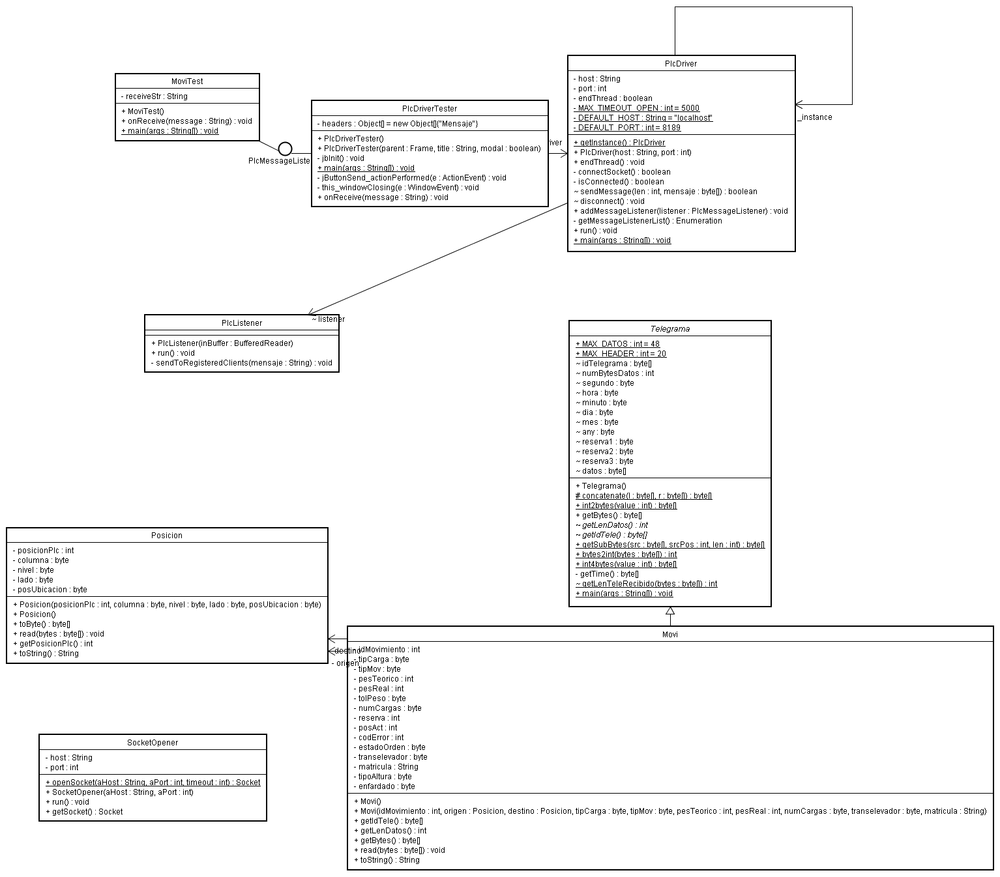

es.sysmap.interflex.plcdriver.PlcDriver
es.sysmap.interflex.plcdriver.PlcDriver
|
|||||||||
| PREV CLASS NEXT CLASS | FRAMES NO FRAMES | ||||||||
| SUMMARY: NESTED | FIELD | CONSTR | METHOD | DETAIL: FIELD | CONSTR | METHOD | ||||||||
java.lang.Object
Conecta al socket y port del PLC
Envia mensajes al PLC de forma síncrona
Recibe mensajes del PLC una vez conectado.
Los mensajes recibidos son devueltos al cliente conectado.
Bajo petición del cliente, cierra la conexión

| Constructor Summary | |
PlcDriver(java.lang.String host,
int port)
|
|
| Method Summary | |
void |
addMessageListener(PlcMessageListener listener)
Registrar un cliente para recibir los mensajes del PLC El listener será avisado de todos los mensajes que llegan del PLC |
void |
endThread()
|
static PlcDriver |
getInstance()
Obtener instancia del PlcDriver (singleton) Si no está instanciada, lo será contra el host y port por defecto |
static void |
main(java.lang.String[] args)
|
void |
run()
|
boolean |
sendMessage(byte[] mensaje)
Enviar un mensaje al Plc conectado. |
| Methods inherited from class java.lang.Object |
clone, equals, finalize, getClass, hashCode, notify, notifyAll, toString, wait, wait, wait |
| Constructor Detail |
public PlcDriver(java.lang.String host,
int port)
| Method Detail |
public static PlcDriver getInstance()
public void endThread()
public boolean sendMessage(byte[] mensaje)
mensaje - array de bytes a enviar
public void addMessageListener(PlcMessageListener listener)
listener - public void run()
run in interface java.lang.Runnablepublic static void main(java.lang.String[] args)
args -
|
|||||||||
| PREV CLASS NEXT CLASS | FRAMES NO FRAMES | ||||||||
| SUMMARY: NESTED | FIELD | CONSTR | METHOD | DETAIL: FIELD | CONSTR | METHOD | ||||||||